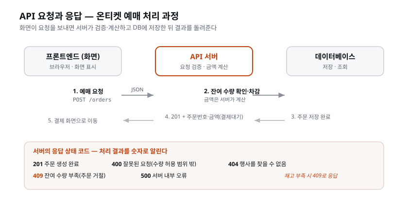

이 장을 마치면 화면에 필요한 값과 DB에 저장된 값을 연결하는 API 명세서(docs/API-Spec.md)를 작성하고, 아키텍처를 정할 때 만든 아키텍트 스킬(
/architect)로 명세를 설계·관리할 수 있다. 명세의 필드가 ERD의 컬럼이나 계산값에 근거하는지 확인하고, PRD·ERD·화면기획서와 대조해 불일치를 해결한다. REST API·엔드포인트·상태 코드 같은 용어도 익힌다.
지금 온티켓 폴더에는 서로 마주 보는 두 문서가 있다.
하나는 docs/화면기획서.md다. 화면마다 무엇을 보여 주고 무엇을 입력받는지를 적은
문서로, 한마디로 '화면이 원하는 것' 이다. 이벤트 상세 화면은 제목·장소·일시와 등급별
가격·잔여 수량을 원하고, 예매 화면은 등급·수량·이메일을 보내 주문번호와 결제 금액을 돌려받고, 결제가 승인되면 QR을 받길 원한다.
다른 하나는 docs/ERD.md다. DBA가 확정한 테이블과 컬럼, 관계와 제약, 상태값을 적은
문서로, 'DB가 가진 것' 이다. 게다가 이쪽은 문서만 있는 것이 아니다 — Supabase에
테이블 다섯 개가 실제로 서 있고, CSV에서 부은 데이터가 들어 있다.
한쪽은 원하고, 한쪽은 가졌다. 그런데 둘 사이에는 아직 아무것도 없다. 아키텍처를 결정할 때
온티켓을 화면(web/)과 서버(api/)로 나누기로 했고 빈 골격도 세워 두었지만, 그 둘이
무엇을 어떤 이름으로 주고받을지는 어디에도 적혀 있지 않다.
이 상태에서 곧바로 "주문 기능 만들어줘"라고 구현을 시키면 무슨 일이 생길까. 서버를 만드는 AI는 구매자 이메일을 어떤 이름으로 받기로 하고, 화면을 만드는 AI는 같은 값을 다른 이름으로 보내기로 한다. 잔여 수량도 양쪽이 서로 다른 이름으로 부른다. 둘 다 그럴듯한 이름이고, 각자 따로 돌려 보면 잘 돈다. 그런데 둘을 붙이는 순간 화면에 값이 뜨지 않는다. 오류 메시지조차 없다 — 틀린 코드는 없고, 이름이 서로 다를 뿐이기 때문이다.
이렇게 주고받는 데이터 한 항목 한 항목을 필드(field) 라고 부른다. 필드의 이름과 형식을 양쪽이 각자 상상하게 두면 반드시 어긋난다. 그래서 상상할 틈을 없앤다 — 서버가 어떤 창구를 열고, 각 창구가 어떤 필드를 받아 어떤 필드를 돌려주는지를 문서 하나에 먼저 못 박는다. 이 문서가 API 명세서다. 화면기획서와 ERD가 마주 보는 양 끝이라면, API 명세서는 그 둘을 잇는 문서다. (API가 정확히 무엇인지는 바로 아래 용어 정리에서 잡는다.)
API 명세서를 쓰려면 주고받을 값이 먼저 정해져 있어야 한다. 명세의 필드는 ERD의 컬럼에서 나온다. 테이블도 없고 컬럼도 없는 상태에서 명세를 쓰면, 필드 이름을 지어낼 수밖에 없다. 그리고 지어낸 이름은 나중에 만들어지는 DB와 어긋난다.
온티켓에 실례가 있다. 첫 버전에는 로그인이 없다(PRD의 범위 제외). 그러면 주문한 사람을
무엇으로 알아볼 것인가? 이 질문은 DB를 설계할 때 이미 답이 났다 — 주문 테이블에 구매자
이메일 컬럼을 두고, 과거 데이터에서 온 회원 번호는 비워 둘 수 있게 남긴다. docs/ERD.md에
사람이 내린 결정으로 적혀 있다. 그래서 이 장의 명세는 고민할 것이 없다. 주문 요청은 구매자
이메일을 받고, 마이티켓은 주문번호와 구매자 이메일로 조회한다. 필드 이름도 ERD의 그 컬럼
이름을 쓴다. ERD의 결정을 그대로 받아 쓴다.
순서가 반대였다면 어땠을까. PRD만 보고 명세를 쓰는 AI는 "이메일로 주문을 받는다"는 문장에서
구매자 이메일 필드를 지어낸다. 한참 뒤 CSV만 보고 DB를 설계하는 AI는 orders.csv에
있는 대로 회원 번호만 둔다. 두 문서는 각자 멀쩡해 보이지만 서로 어긋나 있고, 그 사실은
구현이 한창일 때에야 드러난다. 검토 기준으로 삼을 문장 하나를 여기서 챙겨 두자 —
명세에만 있고 ERD에 없는 값이 있으면, 어느 한쪽이 거짓말을 하는 것이다.
단, 모든 필드가 컬럼과 일대일은 아니다. 잔여 수량은 DB에 저장된 값이 아니라 총수량 − 판매수량으로 서버가 계산하는 값이고, 결제 금액도 가격 × 수량으로 서버가 계산한다. 그래도 계산의 재료는 전부 ERD에 있다. ERD에 재료조차 없는 값은 명세에 적을 수 없다.
누가 무엇을 하는지도 갈라 두자. 세 문서를 읽고 명세 초안을 쓰는 것은 AI가 한다. 그 명세가 ERD·화면기획서와 어긋나지 않는지 대조 결과를 읽고, 어긋난 곳을 어느 문서 쪽으로 맞출지 정하는 것은 사람이 한다.
명세를 확정하면 구현 순서도 분명해진다. 먼저 백엔드가 명세(무엇을 주고받을지)와 ERD·DB (실제로 가진 값)를 보고 API 서버를 만든다. 이어서 프론트엔드가 같은 명세와 돌아가는 백엔드를 보고 화면을 붙인다. 검증하는 쪽도 같은 명세를 펴 놓고 채점한다. 만드는 시점은 달라도 보는 문서가 같으니 어긋나지 않는다. 이 이야기는 아래 'API 명세서' 절에서 자세히 푼다.
지금까지의 흐름을 한 줄로 그으면 이렇다. 앞 문서가 다음 문서의 입력이 되는 사슬이다.
회의록 → PRD → 화면기획서(화면이 원하는 것) → ERD·DB(가진 것)
→ API 명세서(둘을 잇는 문서) → 백엔드(명세 + DB) → 프론트(명세 + 돌아가는 백엔드)
[짚고 가기] 이 사슬이 언제나 한 방향으로만 흐르는 것은 아니다. 명세를 쓰다 보면 "화면은 이 값을 원하는데 ERD에 재료가 없다"가 발견되기도 한다. 그때 명세에 값을 지어 넣지 않고, 질문으로 남겨 ERD 쪽으로 되돌린다. 컬럼을 추가할지 화면에서 그 값을 뺄지는 사람이 정한다. API 명세서는 양 끝을 잇는 문서라서, 양 끝의 어긋남이 가장 먼저 보이는 곳이기도 하다.
아키텍처를 결정할 때 온티켓을 화면(프론트엔드)과 데이터 처리(서버)로 나누기로 했고,
web/과 api/라는 빈 골격도 이미 서 있다. 그 둘이 대화하는 방법이 API다. API 명세서를 쓰려면
명세서의 말부터 알아야 하니, 용어를 여기서 확실히 잡는다.
이 절은 이 교재에서 개발을 처음 배우는 사람에게 가장 낯선 부분일 수 있다. 그러니 천천히, 비유를 하나씩 손에 쥐어 가며 읽자. 여기 나오는 말들 — API, REST, 엔드포인트, GET·POST, 200·404, JSON — 은 남은 과정 내내, 그리고 개발을 계속하는 한 평생 쓰인다. 지금 완벽히 외울 필요는 없다. "아, 그 식당 비유의 그거"라고 떠올릴 수 있을 정도면 충분하다.
시작하기 전에 큰 그림을 하나 다시 그려 두자. 우리가 만드는 온티켓은 두 개의 프로그램 으로 나뉘어 있다. 사용자가 눈으로 보고 클릭하는 화면(프론트엔드), 그리고 그 뒤에서 데이터를 저장하고 계산하는 서버(백엔드). 이 둘은 서로 다른 곳에서 돌아간다 — 화면은 사용자의 브라우저 안에서, 서버는 어딘가의 컴퓨터에서. 물리적으로 떨어진 두 프로그램이 협력해 하나의 서비스를 이루려면, 서로 대화할 방법이 필요하다. 그 대화의 방식과 규칙이 바로 API다. 이 절의 모든 용어는 "떨어진 두 프로그램이 어떻게 대화하는가"라는 한 가지 질문의 세부 사항이라고 생각하면 길을 잃지 않는다.
프로그램끼리 서로 기능을 요청하고 응답받는 약속된 창구다. 식당에 비유하면 정확히 맞아떨어진다.
우리가 매일 쓰는 앱이 전부 이렇게 동작한다. 날씨 앱은 기상청 API에 "오늘 서울 날씨"를 요청하고, 지도 앱은 지도 API에 "이 좌표의 지도 조각"을 요청한다. 카카오페이 결제도, 유튜브 영상 목록도 전부 API 요청과 응답이다.
이름을 한 글자씩 뜯어 보면 개념이 또렷해진다. API는 'Application Programming Interface'의 약자다. 마지막 단어 Interface(인터페이스) 가 핵심인데, 이건 '서로 다른 두 것이 맞닿아 소통하는 접점'을 뜻한다. 자동차의 운전대와 페달이 좋은 예다. 운전자는 엔진이 어떻게 폭발해 바퀴를 굴리는지 하나도 몰라도, 운전대를 돌리고 페달을 밟는 것만으로 차를 몬다. 운전대와 페달이 사람과 엔진 사이의 '인터페이스'다. 마찬가지로 API는 프로그램과 프로그램 사이의 인터페이스 — 상대가 내부적으로 어떻게 돌아가는지 몰라도, 정해진 창구로 요청만 하면 결과를 받을 수 있게 해 주는 접점이다.
식당 비유를 조금 더 늘려 보자. 이 비유는 이 장 내내 쓰이니 확실히 붙잡아 두면 좋다.
고객이 주방에 직접 들어가지 않는다는 점이 중요하다. 만약 고객이 아무 때나 주방에 들어가 냄비를 뒤집을 수 있다면 식당은 아수라장이 된다. 그래서 창구(웨이터, 곧 API)를 통해서만 소통한다. 소프트웨어에서도 화면이 서버의 데이터베이스를 직접 헤집으면 큰일 난다 — 아무나 남의 주문 정보를 지워 버릴 수도 있으니까. API라는 정해진 창구를 두고, 그 창구가 허락한 요청만 받는 것이 안전하고 질서 있는 방식이다.
[짚고 가기] API를 "프로그램끼리 대화하는 법"이라고만 하면 처음엔 여전히 추상적이다. 식당 비유 하나를 손에 쥐고 이 절 내내 그 위에 용어를 얹어 가면 길을 잃지 않는다. GET은 "메뉴 보여 달라", POST는 "주문 넣는다", 200은 "여기 음식 나왔습니다", 404는 "그런 메뉴 없는데요"… 모든 용어가 하나의 비유 안에 자리를 잡으면 머릿속에서 흩어지지 않는다.
본격적인 용어에 들어가기 전에 한 쌍만 더 잡자. 클라이언트(client) 와 서버(server) 다. API 이야기에는 늘 이 두 역할이 등장한다.
식당 비유에 얹으면 고객이 클라이언트, 주방이 서버다. 요청은 고객에게서 주방으로, 응답은 주방에서 고객으로 흐른다. 대화는 항상 클라이언트가 먼저 요청하고, 서버가 응답하는 방향으로 시작된다는 점을 기억하자. 주방이 고객을 부르지 않는다.

REST API는 API를 설계하는 가장 널리 쓰이는 방식이다. 핵심 아이디어는 단순하다 — 자원(데이터)마다 주소를 주고, 그 주소에 동사(메서드)로 요청한다.
엔드포인트(endpoint) 는 그 주소 하나하나를 말한다. 온티켓이라면 예컨대 이렇게 생긴다:
https://api.onticket.example/events ← 이벤트 목록이라는 자원의 주소
https://api.onticket.example/events/EV001 ← 특정 이벤트 하나의 주소
https://api.onticket.example/orders ← 주문이라는 자원의 주소
'REST'라는 이름부터 풀어 보자. REST는 'REpresentational State Transfer'의 약자인데, 이 영어를 외울 필요는 전혀 없다. 대신 REST가 담고 있는 발상 하나만 붙잡으면 된다 — 세상의 모든 것을 '자원(resource)'으로 보고, 자원마다 고유한 주소를 붙인다는 발상이다. '자원'이란 그저 우리가 다루는 데이터 덩어리를 뜻한다. 온티켓에서는 이벤트가 하나의 자원, 주문이 또 하나의 자원, 입장 기록이 또 하나의 자원이다.
이것이 왜 편리한지는 도서관에 비유하면 와닿는다. 도서관의 모든 책에는 청구기호(주소)가
붙어 있다. "3층 815.5번 책"이라고 하면 누구나 그 책 하나를 정확히 찾는다. REST도
똑같다. /events는 '이벤트 목록 전체'라는 자원의 주소, /events/EV001은 'EV001이라는
이벤트 한 권'의 주소다. 주소만 알면 그 자원을 정확히 가리킬 수 있다. 규칙이 단순하고
일관돼서 사람도 AI도 예측하기 쉽다 — 이것이 REST가 세상에서 가장 널리 쓰이는 이유다.
엔드포인트(endpoint) 라는 말도 뜯어 보자. 'end(끝) + point(지점)', 곧 '끝지점'이다.
요청이 도착하는 마지막 지점, 즉 자원 하나하나의 주소를 가리킨다. 위 예에서 URL의 뒷부분
/events, /events/EV001, /orders가 각각 하나의 엔드포인트다. 식당 비유로는 메뉴판의
'항목 한 줄'에 해당한다. 앞부분 https://api.onticket.example는 '온티켓 서버가 있는 건물
주소', 뒷부분 /events는 '그 건물 안에서 찾아갈 창구'라고 생각하면 된다.
주소의 생김새에도 규칙이 있다. 여러 개를 가리킬 때는 복수형 이름을 쓰고(/events,
/orders — 이벤트'들', 주문'들'), 그중 하나를 콕 집을 때는 뒤에 식별자를 붙인다
(/events/EV001 — 이벤트들 중 EV001). 이 규칙은 강제는 아니지만 거의 모든 REST API가
따르는 관례라, 주소만 봐도 "아, 목록이구나 / 특정 하나구나"를 짐작할 수 있다.
같은 주소라도 "무엇을 하고 싶은지"를 메서드로 구분한다. 네 개만 알면 된다.
| 메서드 | 뜻 | 온티켓 예 |
|---|---|---|
| GET | 조회한다 (읽기만) | GET /events — 이벤트 목록을 보여줘 |
| POST | 새로 만든다 | POST /orders — 주문을 하나 생성해줘 |
| PATCH | 일부를 고친다 | PATCH /orders/123 — 이 주문의 상태를 바꿔줘 |
| DELETE | 지운다 | DELETE /orders/123 — 이 주문을 삭제해줘 |
여기서 잠깐 'HTTP'라는 말을 짚자. HTTP(HyperText Transfer Protocol) 는 웹에서 클라이언트와
서버가 대화할 때 쓰는 공용 언어이자 규칙이다. 브라우저 주소창에 http://나 https://가
붙는 걸 매일 보았을 것이다. 그 HTTP가 바로 이것이다. 세계의 거의 모든 웹 통신이 이 규칙
위에서 이뤄진다. 그리고 HTTP는 요청할 때 "무엇을 하려는지"를 밝히도록 정해 두었는데,
그 '무엇을'에 해당하는 동사가 메서드(method) 다.
앞서 REST의 핵심을 "주소(자원)에 동사(메서드)로 요청한다"고 했다. 이제 그 '동사'가
구체화된다. 같은 /orders라는 주소여도, 그 앞에 어떤 동사를 붙이느냐에 따라 전혀 다른
일이 된다. 이것이 처음엔 헷갈리는데, 일상 언어와 똑같다고 생각하면 쉽다. "그 서류(자원)를
보여줘", "그 서류를 새로 써줘", "그 서류를 고쳐줘", "그 서류를 버려줘" —
대상은 같은 서류지만 동사가 다르니 요청이 다르다. HTTP 메서드가 바로 그 동사다.
네 개를 하나씩, 식당 비유와 함께 짚어 보자.
GET /events는 "지금 판매 중인 이벤트 목록을 보여줘"다. 페이지를 새로고침할 때마다
일어나는 일의 대부분이 GET이다. 여러 번 눌러도 안전하다 — 보기만 하니까.POST /orders는 "이 조건으로 주문을 하나 새로 만들어줘"다. POST는 상태를
바꾸는 요청이라 조심해야 한다 — 결제 버튼을 실수로 두 번 누르면 주문이 두 개 생길 수도
있다. (그래서 실무에서는 이런 중복을 막는 장치를 따로 둔다.)PATCH /orders/123은 "123번 주문의 상태만 '입장완료'로 바꿔줘"다. 주문
전체를 다시 만드는 게 아니라 상태라는 한 항목만 손댄다.DELETE /orders/123은 "123번 주문을 없애줘"다.
되돌리기 어려운 동작이라 가장 신중히 다룬다.참고로 PATCH와 비슷한 PUT이라는 메서드도 있다. PUT은 "전체를 통째로 바꿔치기", PATCH는 "일부만 수정"이라는 차이가 있다. 온티켓의 운영 화면처럼 공연과 등급을 한 화면에서 통째로 고쳐 저장한다면 PUT이 어울린다. 어느 쪽을 쓸지는 아키텍트가 정하니, 지금은 "고칠 땐 PATCH나 PUT" 정도로 기억해 두면 된다.
메서드를 이렇게 나누는 이유가 있다. 주소만 보고는 "이 요청이 데이터를 바꾸는가, 그냥 읽기만 하는가"를 알 수 없다. 그런데 메서드를 보면 한눈에 안다 — GET이면 안전하게 읽기, POST·PATCH·DELETE면 무언가를 바꾸는 요청. 이 구분은 나중에 "실수로 데이터를 바꾸는 일을 막는" 안전장치의 바탕이 된다. 예를 들어 검색 엔진의 자동 수집 로봇은 GET만 따라다니고 POST는 건드리지 않는다 — GET은 안전하다는 약속을 믿기 때문이다.
[짚고 가기] "왜 주소만으로 안 되고 동사가 필요할까"는 흔히 떠오르는 의문이다.
/orders하나로 '주문 조회'와 '주문 생성'을 어떻게 구분할지 되짚어 보면 답이 저절로 나온다. 같은 창구(주소)에 "볼게요(GET)"와 "넣을게요(POST)"라는 다른 주문을 넣는 그림을 떠올리면 확실히 잡힌다. 메서드 네 개는 억지로 외우기보다 "읽기(GET) 하나, 바꾸기 셋(POST·PATCH·DELETE)"으로 묶어 두면 부담이 줄어든다.
서버는 응답할 때 결과를 세 자리 숫자로 함께 알린다. 자주 만나는 것만 기억하자.
| 코드 | 뜻 | 온티켓 예 |
|---|---|---|
| 200 | 성공 (조회 등) | 이벤트 목록을 잘 보냈다 |
| 201 | 만들었다 | 주문이 생성됐다 |
| 400 | 요청이 잘못됐다 | 수량에 -1을 보냈다 |
| 404 | 그런 자원이 없다 | 없는 이벤트 ID를 조회했다 |
| 409 | 충돌 — 지금 상태와 모순된다 | 잔여 1장인데 2장을 주문했다 |
| 500 | 서버 쪽에서 사고가 났다 | 서버 내부 오류 |
일상에서도 이미 만나고 있다 — 없는 페이지에 들어갔을 때 보는 "404 Not Found"가 바로 이것이다.
상태 코드(status code)를 왜 숫자로 주는지부터 짚자. 서버의 응답을 받는 것은 사람이 아니라 프로그램(화면)이다. 프로그램은 "주문을 잘 처리했어요, 그런데 재고가 모자라네요" 같은 문장을 일일이 읽고 해석하기 어렵다. 그래서 결과를 정해진 숫자로 딱 떨어지게 알려 준다. 화면 쪽 프로그램은 이 숫자만 보고 "아, 200이니 성공, 화면에 목록을 그리자", "409네, 재고 부족이니 안내 메시지를 띄우자"라고 곧바로 판단한다. 사람의 눈치가 필요 없는, 기계끼리의 깔끔한 신호다.
이 숫자에는 규칙이 있어서 첫 자리만 봐도 대략 무슨 일인지 안다. 우편번호 앞자리로 지역을 짐작하는 것과 비슷하다.
| 앞자리 | 큰 뜻 | 어감 |
|---|---|---|
| 2xx | 성공 | "잘 됐어요" |
| 4xx | 요청한 쪽(클라이언트)의 잘못 | "당신 요청에 문제가 있어요" |
| 5xx | 응답한 쪽(서버)의 잘못 | "우리 쪽에서 사고가 났어요" |
이 큰 틀만 잡아도 절반은 이해한 것이다. 특히 4xx와 5xx의 구분이 중요하다 — 4로 시작하면 "요청을 보낸 쪽이 뭘 잘못했다", 5로 시작하면 "받은 서버가 고장 났다"는 책임 소재의 차이다. 이제 표의 여섯 개를 하나씩, 온티켓 상황에 얹어 짚어 보자.
-1을 보내거나, 필수인 이메일을 빠뜨리면 400이다. 식당으로
치면 메뉴에 없는 조합을 우기거나 주문서를 반쯤 비워 낸 상황이다. "다시 제대로 써서
오세요"라는 뜻이다.EV999를 조회하면 404다. 우리가 웹을 돌아다니다 만나는 그 유명한 "404"가
바로 이것 — 없는 페이지 주소를 쳤다는 신호다. 식당으로 치면 "그 메뉴는 저희 집에
없는데요".'409 Conflict(충돌)'라는 이름의 어감을 한 번 더 짚자. conflict = 충돌, 모순. 요청한 내용이 서버의 현재 상태와 부딪친다는 뜻이다. "2장 주세요"라는 요청과 "지금 1장뿐" 이라는 현실이 충돌한다. 이 개념은 재고뿐 아니라 곳곳에서 쓰인다 — 이미 쓰인 아이디로 가입을 시도하거나, 두 사람이 같은 문서를 동시에 고치려 할 때도 409가 돌아온다.
[짚고 가기] 400·404·409는 가장 헷갈리기 쉬운 조합이다. "요청 형식이 틀렸으면 400, 대상이 없으면 404, 대상은 있는데 지금 상황과 안 맞으면 409"라는 세 문장으로 정리해 두면 좋다. 온티켓의 예매 하나로 셋이 다 나온다 — 수량에 문자를 보냄(400) / 없는 이벤트를 예매(404) / 있는 이벤트인데 재고 부족(409). 특히 409는 오대표의 초과 판매 트라우마와 직결된다. "이 숫자 하나가 골목 라이브 사고를 막는다"고 연결해 두면 오래 기억에 남는다.
API가 주고받는 데이터는 대부분 JSON이라는 형식으로 쓴다. 중괄호와 따옴표로 이름-값 쌍을 나열하는, 사람도 읽을 수 있는 텍스트다.
{
"공연번호": "EV009",
"공연명": "재즈 페스티벌 <리버사이드 재즈>",
"등급목록": [
{ "등급번호": "TT020", "등급": "1일권", "가격": 99000, "잔여수량": 1968 }
]
}
이름표는 읽기 쉽게 한글로 적었다. 실제 응답의 이름표는 아키텍트가 ERD의 컬럼을 보고 정한다.
JSON은 'JavaScript Object Notation'의 약자로, '자바스크립트 객체 표기법'이라는 뜻이다. 원래 자바스크립트라는 언어에서 데이터를 적던 방식인데, 워낙 단순하고 읽기 편해서 이제는 언어를 가리지 않고 API 세계의 공용 데이터 양식이 되었다. 이름의 유래는 자바스크립트지만, 지금은 파이썬이든 무엇이든 다 이 형식으로 데이터를 주고받는다.
왜 이런 형식이 필요할까? 앞서 클라이언트와 서버는 떨어진 두 프로그램이라고 했다. 이 둘이 데이터를 주고받으려면, 서로가 똑같이 알아듣는 약속된 글쓰기 규칙이 필요하다. 우편으로 치면 주소를 쓰는 규칙 같은 것이다. "받는 사람은 여기, 보내는 사람은 저기"라는 양식이 정해져 있어야 우체국이 편지를 배달한다. JSON이 데이터 세계의 그 양식이다.
JSON을 읽는 법은 어렵지 않다. 규칙 몇 개만 알면 된다.
{ } 는 하나의 '덩어리'를 묶는다. 위 예에서 전체가 하나의 이벤트 덩어리다."이름": 값 은 '이름표와 그 값'의 쌍이다. "공연번호": "EV009"는 "이 덩어리의
공연번호라는 항목의 값은 EV009"라는 뜻이다. 마치 서류의 '이름: 홍길동'과 똑같다.[ ] 는 '목록(여러 개)'을 뜻한다. 등급목록이 대괄호로 묶여 있으니,
티켓 종류가 여러 개일 수 있다는 뜻이다(위 예엔 하나만 들어 있다)."1일권"), 따옴표 없는 숫자는 수(99000)다. 이
구분 덕에 프로그램은 "99000은 계산할 수 있는 숫자, '1일권'은 그냥 이름"임을 안다.그래서 위 JSON을 사람 말로 풀면 이렇다 — "EV009라는 이벤트가 하나 있는데, 제목은 '재즈 페스티벌 리버사이드 재즈'이고, 티켓 종류로 TT020(1일권, 9만 9천 원, 잔여 1968장)이 있다." 이름표가 붙어 있으니, 개발을 모르는 사람도 무슨 데이터인지 대충 읽힌다. 이 '사람도 읽을 수 있다'는 점이 JSON이 사랑받는 이유다 — 문제가 생겼을 때 사람이 눈으로 확인하기 쉽다.
한 가지 자주 하는 실수를 미리 일러두자. JSON에서는 이름(키)을 반드시 큰따옴표로
감싸야 하고('공연번호'가 아니라 "공연번호"), 항목 끝의 쉼표 규칙도 엄격하다. 다행히
이 형식을 우리가 손으로 쓸 일은 거의 없다 — API가 자동으로 만들어 주고받는다. 지금은
"응답이 이런 이름표-값 모양의 텍스트로 온다"는 것만 눈에 익히면 충분하다.
[짚고 가기] JSON을 처음 보면 중괄호·대괄호·따옴표에 압도되기 쉽다. 겁먹을 것 없이 "이건 그냥 이름표 붙은 서류"라고 생각하면 된다. 브라우저 개발자 도구(F12)의 네트워크 탭을 열어 아무 사이트나 새로고침해 보면, 실시간으로 오가는 JSON 응답이 그대로 보인다. 지금 보고 있는 화면도 이렇게 생긴 데이터를 받아서 그린 것이다 — 이걸 직접 확인하면 API·JSON이 교과서 밖 현실로 다가온다.
API 명세서(API Spec) 는 이 서비스에 어떤 엔드포인트가 있고, 각각 무엇을 받아 무엇을 돌려주는지를 적은 문서다. 식당 비유로는 메뉴판 — 주방(서버 개발)과 홀(화면 개발)이 이 메뉴판 하나를 보고 각자 일한다.
'명세(明細)'라는 말은 '밝을 명, 자세할 세', 곧 '자세히 밝혀 적음'이라는 뜻이다. 영어 'specification'을 줄여 'spec(스펙)'이라고도 부른다. 우리가 전자제품을 살 때 보는 '사양표 (스펙)' — 화면 크기, 배터리 용량, 무게가 하나하나 적힌 표 — 와 같은 말이다. API 명세서는 곧 'API의 사양표'다. 어떤 창구(엔드포인트)가 있고, 각 창구에 무엇을 넣으면(요청) 무엇이 나오는지(응답), 잘못 넣으면 어떤 오류가 나는지를 빠짐없이 밝혀 적은 문서다.
명세 한 항목의 모양은 예컨대 이렇다. 경로는 예시다 — 실제 경로는 아키텍트가 화면기획서를 보고 정하므로 내 명세와 다를 수 있다.
### POST /orders — 주문 생성
요청(JSON):
공연 번호 글자 필수
등급 번호 글자 필수
수량 숫자 필수, 1~4
구매자 이메일 글자 필수
응답 201(JSON):
주문번호, 결제 금액, 주문 상태("결제대기")
오류:
400 — 필수값 누락, 수량 범위 밖
404 — 없는 공연 / 없는 등급
409 — 잔여 수량 부족
실제 명세에서는 각 줄 맨 앞에 필드 이름이 온다. 그 이름은 아키텍트가 ERD의 컬럼에서 가져오므로, 여기서는 뜻으로만 적었다.
이 한 항목을 앞 절의 용어로 낱낱이 읽어 보자. 용어 정리에서 익힌 것이 여기서 전부 만난다.
### POST /orders — 주문 생성 — 이 창구의 동사는 POST(새로 만든다), 주소(자원)는
/orders(주문). 곧 "주문을 새로 만드는 창구"라는 제목이다.공연 번호 글자 필수는 "공연 번호를 글자(string)로, 반드시 보내라"는 뜻.
수량 숫자 필수, 1~4는 "수량은 숫자(number)로, 필수이며, 1에서 4 사이여야 한다"는 뜻이다.
이 조건이 곧 검증 규칙이 된다 — 5를 보내면 400.
필드 이름은 지어내지 않는다. 구매자 이메일 필드의 이름은 ERD의 구매자 이메일 컬럼에서
가져온다 — 로그인이 없는 첫 버전에서 주문자를 이메일로 알아보기로 한, DB 설계 때의 그 결정이다.
공연 번호·등급 번호·수량도 전부 ERD에 있는 컬럼의 이름을 쓴다.이 표기법 자체는 엄격한 표준이 아니라, 사람과 AI가 함께 읽기 좋게 정리한 형식이다. 실무에서는 이걸 더 엄밀한 기계용 형식(뒤에서 소개할 OpenAPI 등)으로도 쓰지만, 우리 목적에는 이렇게 사람이 읽기 쉬운 명세로 충분하다. 중요한 건 형식이 아니라 빠진 항목이 없는가 — 요청·응답·오류가 다 적혀 있는가다.
이 과정은 백엔드를 먼저 만들고, 그 돌아가는 백엔드에 프론트엔드를 붙인다. 프론트엔드는 명세와 돌아가는 백엔드만 있으면 무엇으로든 만들 수 있기 때문이다. 만드는 시점이 다른 두 역할이 어긋나지 않으려면, 둘이 보는 문서가 같아야 한다. 그 문서가 명세다.
첫째, 모두가 같은 문서를 보는 기준 자료가 된다. 명세 없이 "주문 API 만들어줘"라고 하면 AI가 필드 이름·형식을 마음대로 정한다. 나중에 화면을 만드는 AI는 또 다르게 정한다. 그러면 둘이 안 맞는다. 명세가 있으면 지시가 이렇게 바뀐다 — "명세의 주문 생성 그대로 구현해. 명세에 없는 필드를 추가하면 실패다." 빈칸이 사라진다. 백엔드는 이 문서를 보고 만들고, 프론트엔드는 같은 문서를 보고 붙이고, 검증을 맡는 QA도 같은 문서를 펴 놓고 검사한다.
'기준 자료(source of truth)'라는 말을 짚어 두자. 영어를 직역하면 '진실의 원천'으로, "헷갈릴 때 무엇이 맞는지 판정해 주는 단 하나의 기준" 이다. 서버 쪽 AI와 화면 쪽 AI가 구매자 이메일을 서로 다른 이름으로 지었다고 하자. 둘 중 뭐가 맞나? 다툴 필요 없다 — 명세를 펼쳐 보면 된다. 명세에 적힌 이름이 정답이고, 그와 다른 쪽이 틀린 것이다. 이렇게 다툼을 끝내 주는 유일한 기준이 기준 자료다. 여러 AI(그리고 여러 사람)가 함께 일할 때, 각자 다르게 기억하고 다르게 짐작하는 것을 막아 주는 닻이다. 명세가 없으면 각자의 머릿속이 기준 자료가 되어 버리고, 그러면 반드시 어긋난다. 그리고 명세 자신의 기준 자료는 ERD다 — 명세의 구매자 이메일 필드 이름이 맞는 이름인 이유는 ERD에 같은 이름의 컬럼이 있기 때문이다.
둘째, 구멍이 코드가 생기기 전에 드러난다. "같은 QR을 두 번 찍으면?" 같은 질문에 답이 없다는 사실은, 명세를 써 보면 문서 위에서 드러난다. 그때 메우면 문서 한 줄을 고치면 된다. 코드가 생긴 뒤에 드러나면 명세와 서버 코드와 화면 코드를 함께 고쳐야 한다.
셋째, 검증 기준이 된다. 완성된 API가 맞게 만들어졌는지는 명세와 대조하면 된다.
이것도 풀어 보자. 명세가 없으면 "이 API가 잘 만들어진 건가?"를 판단할 잣대가 없다. 재고 부족일 때 409를 돌려줘야 하는지 400을 돌려줘야 하는지, 무엇이 맞는지 기준이 없으니 버그인지 아닌지도 모른다. 명세에 "재고 부족이면 409"라고 적혀 있으면, 실제로 재고 부족 상황을 만들어 보고 409가 오는지 확인하면 된다. 오면 통과, 400이 오면 버그. 이렇게 명세는 '무엇이 옳은가'의 기준선을 그어 주고, 그 선과 대조하는 것만으로 검증이 된다. 시험 문제에 정답지가 있어야 채점을 하듯, API에는 명세가 있어야 검수를 한다.
세 가지를 한 문장으로 묶으면 — 명세는 시작 전엔 설계도, 만드는 중엔 약속, 끝난 뒤엔 채점 기준이다. 그래서 코드보다 먼저 쓴다.
[짚고 가기] "왜 문서를 먼저 쓰지? 코드부터 짜면 안 되나?"는 이 대목에서 누구나 품는 의문이다. 명세 없이 만든 두 AI의 필드 이름이 어긋나 화면에 값이 안 뜨는 상황을 직접 만들어 보면 답이 분명해진다. 서버와 화면이 구매자 이메일을 서로 다른 이름으로 쓰게 해 놓고 "왜 이메일이 안 나올까"를 되짚어 보면, 명세의 필요성이 몸으로 느껴진다. 문서는 일을 늘리는 게 아니라 나중의 삽질을 줄인다 — 이 지점에서 그 사실이 분명해진다.
이 사례들을 조금 더 구체적으로 그려 보자. 명세가 실무에서 어떤 모습으로 쓰이는지 알면, "교재용 개념"이 아니라 "현업에서 매일 쓰는 도구"로 느껴진다.
한 걸음 더 — 실무에서는 명세를 사람이 읽는 문서로만 두지 않고, 기계가 읽는 표준 형식으로도 쓴다. 대표적인 것이 OpenAPI(옛 이름 Swagger) 라는 형식이다. 이름 그대로 API를 '열어 (open)' 표준 양식으로 적어 두면, 그 문서만으로 자동으로 테스트 화면을 만들거나, 화면 쪽 연결 코드를 자동 생성하거나, 문서를 예쁘게 렌더링해 준다. 우리 온티켓 첫 버전에서는 여기까지 갈 필요 없이 사람이 읽기 좋은 마크다운 명세로 충분하지만, "명세를 잘 써 두면 그걸로 자동화할 길이 열린다"는 감각은 기억해 두면 좋다. 명세는 그저 문서가 아니라, 여러 자동화의 출발점이다.
[짚고 가기] 여유가 있으면 카카오나 토스의 공개 개발자 문서를 실제로 한 번 열어 보면 좋다. 지금 우리가 만드는 명세가 이 회사들이 공개한 문서와 같은 종류라는 걸 눈으로 확인하면, 자기 작업의 무게가 달리 느껴진다. 특히 토스 결제 문서는 뒤에서 실제로 쓰게 되니, 미리 한 번 눈에 익혀 두면 결제 붙이는 장에서 낯섦이 줄어든다.
PRD를 쓴 것은 /pm이었다. 그렇다면 API 명세서도 PM에게 맡기면 될까? 그렇지 않다. PM의 기준
자료는 회의록과 PRD이고, PM이 답하는 질문은 "무엇을 만들 것인가"다. 명세가 답하는 질문은
다르다 — "화면이 원하는 것과 DB가 가진 것을 어떤 창구와 어떤 필드로 이을 것인가". 이
질문에 답하려면 화면기획서와 ERD를 나란히 펴 놓고 컬럼 하나하나를 짚어야 한다. 기준 자료도
판단 기준도 PM과 다르다. 편성의 원칙은 "자리는 필요가 증명될 때 늘린다"였다. 지금이 그때다 —
PM과 다른 판단 기준이 필요한 일이라 아키텍트(architect) 역할이 맡는다. 아키텍트 스킬은 아키텍처를
정할 때 만들면서 API 명세서 일도 함께 적어 두었다. 아래는 그 역할이 갖춰야 할 내용을 다시 펼쳐 본 것이다.
역할을 '판단 기준·금지 목록·프로세스·도구 권한'의 네 항목으로 설계하는 틀은 그대로다. 여기에 이 역할이 내놓는 산출물의 목차인 "명세에 담을 것" 과, 이 역할이 되풀이해서 하게 될 검토인 "세 방향 대조" 의 정의를 함께 적어 둔다.
| 항목 | 내용 |
|---|---|
| 하는 일 | API를 설계하고 docs/API-Spec.md를 관리한다. 명세를 만들거나 대조·수정할 때 쓴다 |
| 판단 기준 | 근거는 docs/PRD.md(있어야 할 기능), docs/화면기획서.md(화면이 원하는 값), docs/ERD.md(DB가 가진 값)다. 필드 이름은 ERD의 컬럼 이름에서만 가져온다. 명세에만 있고 ERD에 없는 값은 어느 한쪽의 거짓말이다 |
| 명세에 담을 것 | 엔드포인트마다 요청 필드(필수 여부·형식)·성공 응답·오류 응답 / 화면마다 필요한 값이 어느 응답에 있는지 정리한 표 / 잔여·금액 같은 계산값은 서버가 계산한다는 것과 그 계산식 / 문서 끝에 '질문' 목록 |
| 세 방향 대조 | PRD와는 빠진 기능과 근거 없는 엔드포인트를, ERD와는 ERD에 없는 필드를(계산값이면 재료 컬럼을 밝힌다), 화면기획서와는 화면이 원하는데 어느 응답에도 없는 값을 찾아 표로 보고한다. 대조만 시켰을 때는 고치지 않는다 |
| 프로세스 | 세 문서 확인 → 엔드포인트 설계 → 필드를 ERD와 맞춤 → 세 방향 대조 → 모르는 것은 질문으로 남기고 보고. 명세를 고친 뒤에도 다시 대조한다 |
| 금지 목록 | 코드 구현 금지 / ERD에 없는 데이터를 지어내는 것 금지 / PRD 범위 밖 엔드포인트 금지 / 금액·잔여 계산을 클라이언트에 맡기는 설계 금지 |
| 도구 권한 | docs/API-Spec.md를 쓰고 고친다. 확정할 때 사람이 맡기면 명세와 어긋난 ERD·ADR 문장만 맞춘다. 코드·스키마·DB는 손대지 않는다 |
각 항목이 왜 그렇게 적혔는지 풀어 두자. 설명이 긴 데에는 이유가 있다. 여기에 적어 둔 만큼, 뒤에서
/architect에게 일을 시키는 말이 짧아진다.
/dba와 사람이 고친다.
다만 명세를 확정할 때 사람이 맡기면, 명세와 어긋나게 된 ERD·ADR의 문장만 명세에 맞춘다.
코드·스키마·DB는 어떤 경우에도 손대지 않으니, 코드에 손대는 길은 여기서 닫힌다.스킬에 적은 줄 하나하나는 각각 어떤 사고를 막으려는 것이다. 그 사고를 알고 나면, 생성된 명세를 검토할 때 무엇을 봐야 하는지도 같이 보인다.
이것을 스킬 파일 하나(.claude/skills/architect/SKILL.md)에 담아 두면, /architect 한마디로
이 규율이 걸린 채 대화가 시작된다. 이후 명세를 만들고, 대조하고, 고치는 모든 지시가 이 규율
위에서 돈다. 명세는 이 장에서 한 번 쓰고 끝나는 문서가 아니다. 구현하다가 명세를 바꿔야 할
일이 생기면, 그때도 코드부터 고치지 않고 /architect를 불러 명세부터 고친다.
[짚고 가기] "PM 스킬에 명세 쓰는 법을 한 줄 더 얹으면 안 되나?"라는 의문이 들 수 있다. 얹을 수는 있다. 다만 그러면 PM의 금지 목록("기술 스택·디자인 결정 금지")과 아키텍트의 일이 한 파일 안에서 부딪친다. 기준 자료가 다르고 금지가 다르면 다른 자리다 — 역할을 나눌지 말지는 일의 양이 아니라 이 둘로 판단한다.
이 절의 프롬프트는 모두 짧다. 필드를 어디서 가져오는지, 명세에 무엇을 담는지, 세 방향 대조가
무엇인지, 빈칸을 만나면 어떻게 하는지 — 이런 기준·순서·형식·금지는 앞에서 정의한
/architect 스킬에 적혀 있다. 그래서 프롬프트에는 이번 작업에 해당하는 조건만 말한다. 근거
문서의 지목, 이번 일의 범위("아직 고치지는 마"), 사람이 지금 내리는 결정("포스터 이미지는
첫 버전에 없이 간다")이다. 프롬프트에 규칙을 길게 적고 있다면 그 규칙이 있어야 할 스킬이나
문서가 비어 있다는 신호다. 그럴 때는 프롬프트를 늘리지 말고 스킬을 채운다. 그리고 결과가
기대와 다르면 그때 고친다.
/architect docs/PRD.md·docs/화면기획서.md·docs/ERD.md를 근거로 API 명세서를 docs/API-Spec.md에 만들어줘.화면이 서버에 요청할 것을 엔드포인트로 뽑아. 결제 승인은 나중에 구현하지만 명세에는 지금 적어.명세가 정할 수 있는 것(기본값, 빈 결과, 실패 응답 모양, 오류 code)은 네가 정하고 결정 기록에 적어. 질문은 PRD·ERD를 바꿔야 하는 것만 남겨.입력이 문서 셋이다. PRD는 "어떤 기능이 있어야 하는가"를, 화면기획서는 "각 화면이 어떤 값을 원하는가"를, ERD는 "그 값이 DB에 어떤 이름으로 있는가"를 댄다. 앞 산출물을 경로로 지목해 넘기는 것 — 이것이 이 과정에서 역할과 역할이 일을 넘겨받는 방식이다.
프롬프트가 두 줄로 끝나는 데에는 이유가 셋 있다.
첫째, 엔드포인트는 화면에서 나온다. 화면기획서에는 화면마다 무엇을 보여 주고 무엇을 입력받는지가 적혀 있다. 그 화면이 서버에 요청해야 하는 것을 하나씩 창구로 뽑으면 그것이 곧 엔드포인트 목록이다. 경로와 메서드는 아키텍트가 이렇게 뽑아 정한다. 그래서 같은 화면기획서에서도 경로와 필드 이름은 사람마다 다르게 나올 수 있고, 그래도 괜찮다. 뒤에서 백엔드와 프론트엔드가 각자의 명세를 보고 만들기 때문이다. 맞춰야 하는 것은 남의 명세가 아니라 내 화면기획서와 내 ERD다.
둘째, 명세 안에서 정할 수 있는 것은 아키텍트가 정한다. 목록이 비었을 때 무엇을 돌려줄지, 실패 응답을 어떤 모양으로 줄지, 오류마다 어떤 이름을 붙일지는 앞 문서에 없다. 하지만 PRD나 ERD를 바꾸지 않고 명세 안에서 답할 수 있다. 이런 것까지 질문으로 돌려받으면 사람이 아키텍트 대신 설계하게 된다. 그래서 아키텍트가 정하고, 무엇을 왜 그렇게 정했는지 결정 기록에 남기게 한다. 질문으로 돌아오는 것은 PRD나 ERD를 바꿔야 답할 수 있는 것뿐이다.
셋째, 사람은 결과를 본다. 화면마다 필요한 요청이 다 있는지, 주문 생성에 409가 있는지, 결정 기록의 결정에 동의하는지를 읽고, 다르면 그때 고친다.
둘째 줄의 "결제 승인은 나중에 구현하지만 명세에는 지금 적어"는 사람이 지금 정하는 범위다. 결제창을 띄우고 승인하는 코드는 결제를 붙이는 장에서 만든다. 하지만 결제 흐름 — 주문은 결제대기로 만들고, 서버가 결제사에 승인을 요청해 금액이 주문과 같을 때만 결제완료·QR, 다르면 실패 — 은 지금 명세에 있어야 한다. 그래야 백엔드는 주문을 결제대기로 만들고, 프론트엔드는 결제 화면을 그 흐름대로 그린다. 이 줄이 없으면 AI는 "결제는 나중"이라며 결제 승인 창구를 명세에서 빼기 쉽다.
이 프롬프트에는 규칙 목록이 붙어 있지 않다. 필요한 규칙이 없어서가 아니라, 전부 다른 곳에 있기 때문이다.
| 필요한 것 | 어디에 있나 |
|---|---|
| PRD의 기능을 빠짐없이, 명세에만 있는 기능은 안 됨 | /architect 금지 "PRD 범위 밖 엔드포인트"와 세 방향 대조 |
| 필드 이름은 ERD의 컬럼 이름에서만, 없으면 질문으로 | /architect 판단 기준·금지·프로세스 |
| 화면별로 "이 값은 어느 응답에 있는가" 표 | /architect "명세에 담을 것" |
| 계산값은 서버가 계산하고 계산식을 적는다 | /architect "명세에 담을 것"과 금지 |
| 잔여 수량의 이름과 그 재료 컬럼 | docs/ERD.md |
| 엔드포인트마다 요청·성공 응답·오류 응답 | /architect "명세에 담을 것" |
| 어느 경로·메서드인가 | 아키텍트가 화면기획서에서 뽑는다 (템플릿 규칙) |
| 앞 문서에 없는 기본값·빈 결과·실패 응답 모양 | 아키텍트가 정하고 결정 기록에 적는다 |
| 각 상황의 상태 코드·오류 형식·인증 헤더는 무엇인가 | docs/가이드/프로젝트구조.md — 회사 문서. 사람은 결과에서 409를 확인한다 |
| 명세의 절과 표 모양 | docs/templates/API-Spec-템플릿.md — /architect 양식 |
각 줄이 왜 필요한지는 위 '스킬의 이 줄이 막는 사고'에서 풀었다. 여기서 볼 것은 자리다.
명세를 새로 만들 때도, 고칠 때도, 뒤에 기능을 하나 보탤 때도 똑같이 지켜야 하는 규칙은
프롬프트에 두면 매번 다시 적어야 하고, 한 번 빠뜨리면 그때 작성한 명세에도 누락이 생긴다. 스킬에 두면
/architect 한마디에 따라온다.
약한 지시와 강한 지시를 나란히 놓으면 차이가 뚜렷하다.
| 흔한(약한) 지시 | 고친(강한) 지시 | 무엇이 다른가 |
|---|---|---|
| (스킬과 근거 문서 없이) 온티켓 API 명세서 만들어줘 | /architect docs/PRD.md·docs/화면기획서.md·docs/ERD.md를 근거로 만들어줘 |
스킬에 작업 규칙을 적고, 경로로 참고할 문서를 지정한다 |
| 필요한 필드 알아서 넣어줘 | (프롬프트에는 없다 — /architect 판단 기준에 "필드 이름은 ERD의 컬럼 이름에서만"이 있다) |
지어낼 틈을 없애는 줄은 스킬에 한 번 적는다 |
| 잔여 수량도 응답에 넣어줘 | (프롬프트에는 없다 — /architect "명세에 담을 것"에 계산값과 계산식이, ERD에 그 재료 컬럼이 있다) |
계산값의 재료와 계산 주체는 스킬과 ERD가 못 박는다 |
| 대조 결과대로 알아서 고쳐줘 | 명세 검토 끝났어. 포스터 이미지 필드는 빼고, 남은 질문은 네 의견대로 정하고 확정해라 | 넣을 것과 뺄 것만 사람이 말한다 |
구체적인 지시는 사람이 내린 결정과 참고할 문서의 경로를 명시한다. 반복해서 지켜야 할 규칙과 절차는 역할 정의와 기준 문서에 둔다.
명세를 만들었다는 보고에 PRD·화면기획서·ERD와 대조한 표가 함께 온다. 아키텍트 스킬에 그 일이
적혀 있기 때문이다. 사람은 그 표와 명세를 읽고 넣을 것과 뺄 것만 정한다. PRD에 있는데 빠진
기능은 넣고, PRD에 없는데 끼어든 창구나 ERD에 없는 필드는 뺀다. 화면에 꼭 필요한데 ERD에 없는
값이면 명세에 넣지 않고 /dba에게 돌려 ERD부터 고친다.
검토가 끝나면 한 줄로 확정한다.
/architect 명세 검토 끝났어. 남은 질문은 네 의견대로 정하고 확정해라. PRD를 바꿔야 하는 것은 정하지 말고 나에게 물어. 명세와 어긋나게 된 docs/ERD.md·docs/adr/의 문장은 명세에 맞춰 고치고 각 문서의 변경 이력에 적어줘. 스키마·마이그레이션·DB는 바꾸지 않는다.넣고 뺄 것이 있으면 "검토 끝났어" 뒤에 한 줄씩 붙인다. 어떤 주소와 필드로 넣을지는 적지 않는다.
그것은 아키텍트가 정한다. 버전 1.0과 변경 이력은 명세 템플릿의 규칙이라 따로 말하지 않아도 붙는다.
뒤의 두 문장은 명세를 쓰다 바뀐 결정이 다른 문서에 옛날 모습으로 남지 않게 한다. 예를 들어 명세를
쓰며 주문 상태 하나를 더 정했다면, ERD의 상태 목록 문장도 같이 고쳐야 한다. 다만 문서의 문장만
맞추고, 실제 DB는 건드리지 않는다. DB를 바꿔야 하는 일이면 /dba의 몫이다.
[짚고 가기] 프롬프트 두 개(생성·확정)를 한 흐름으로 이어서 해 보면 좋다. 세 문서로 명세를 생성하고 → 보고에 온 대조 표를 읽고 넣을 것과 뺄 것을 정하고 → 한 줄로 확정한다. "필드는 ERD에서만", "PRD 범위 밖 엔드포인트 금지" 같은 경계선 문장이 왜 프롬프트가 아니라 스킬에 들어가는지는, 그 줄을 스킬에서 빼고 생성한 명세를 대조해 보면 확실해진다. 프롬프트가 짧다고 규칙이 없는 것이 아니다. 규칙이 있는 자리가 프롬프트에서 역할 정의로 옮겨 갔을 뿐이다.
이 장의 입력은 앞에서 만든 세 문서, docs/PRD.md·docs/화면기획서.md·docs/ERD.md다.
특히 docs/ERD.md가 확정되어 있고 Supabase에 테이블이 만들어져 있어야 한다 — 명세의 필드를
가져올 곳이 ERD다.
docs/ERD.md를 열어 두 가지를 눈으로 찾아 둔다 — 테이블마다 적힌 컬럼 목록, 그리고
주문자 식별 결정(주문 테이블의 구매자 이메일 컬럼). 이 둘이 이번 명세의 재료다.
다음 프롬프트를 입력한다.
/architect docs/PRD.md·docs/화면기획서.md·docs/ERD.md를 근거로 API 명세서를 docs/API-Spec.md에 만들어줘.화면이 서버에 요청할 것을 엔드포인트로 뽑아. 결제 승인은 나중에 구현하지만 명세에는 지금 적어.명세가 정할 수 있는 것(기본값, 빈 결과, 실패 응답 모양, 오류 code)은 네가 정하고 결정 기록에 적어. 질문은 PRD·ERD를 바꿔야 하는 것만 남겨.위 프롬프트를 그대로 복사해 입력하면 된다. 다른 내용으로 바꿔서 해 보고 싶다면 자유롭게 바꿔도 좋다.
열어 보기 전에 예측을 먼저 적어 두자. 주문을 받을 때 구매자를 무엇으로 받을까? 회원
번호일까, 이메일일까? 그 필드의 이름은 어디서 올까? 근거는 어느 문서의 어느 줄인가? 적었으면 생성된 docs/API-Spec.md를 열어 다음이 들어 있는지 훑는다.
docs/가이드/프로젝트구조.md)대로 운영 경로(회사 문서의 /admin/)
아래에 있고, 운영 비밀번호 헤더(회사 문서의 X-Admin-Password)가 없으면 401인가이 항목들을 확인할 때, 위 용어 정리에서 익힌 눈으로 하나씩 짚어 보자. 내 명세에서 각 항목이 어떤 동사(메서드)와 어떤 주소(엔드포인트)로 되어 있는지, 성공하면 어떤 상태 코드가 오는지를 본다. 경로와 필드 이름은 옆 사람의 명세와 다를 수 있다. 보는 것은 이름이 아니라 내용이다. 특히 세 곳을 눈여겨보라.
파일만 보고 끝내지 말고 AI의 보고도 읽는다. 스킬의 프로세스에 "세 방향 대조 → 질문 남기고 보고"가 있으니, 명세를 만들었다는 보고에 세 방향 대조 표가 함께 온다. 표가 왔는지 확인해 둔다 — 다음 따라하기는 그 표를 읽는 데서 시작한다.
그리고 명세의 결정 기록을 읽는다. 등급을 어떤 순서로 줄지, 이메일을 어떻게 비교할지처럼 앞 문서가 정하지 않은 것을 아키텍트가 무엇으로 정했는지가 거기 적혀 있다. 전부 다시 정할 필요는 없다. 동의하지 않는 것만 한 줄로 고친다. 예를 들면 이렇다.
/architect 공연 상세의 등급은 가격 오름차순으로 바꿔줘
질문 목록에 남은 것이 있다면 PRD나 ERD를 바꿔야 답할 수 있는 것이다. "ERD에 없는 컬럼이
필요하다"는 질문이면 여기서 답하지 않고 /dba에게 돌린다.
명세 생성 보고에 온 대조 표와 docs/API-Spec.md를 읽고 넣을 것과 뺄 것을 정한다.
/architect 명세 검토 끝났어. 남은 질문은 네 의견대로 정하고 확정해라. PRD를 바꿔야 하는 것은 정하지 말고 나에게 물어. 명세와 어긋나게 된 docs/ERD.md·docs/adr/의 문장은 명세에 맞춰 고치고 각 문서의 변경 이력에 적어줘. 스키마·마이그레이션·DB는 바꾸지 않는다.위 프롬프트를 그대로 복사해 입력하면 된다. 넣고 뺄 것이 있으면 "검토 끝났어" 뒤에 붙인다. 예를 들면 이렇다.
/architect 명세 검토 끝났어. 판매 현황 조회는 넣고, 쿠폰 API와 포스터 이미지 필드는 빼. 남은 질문은 네 의견대로 정하고 확정해라. PRD를 바꿔야 하는 것은 정하지 말고 나에게 물어. 명세와 어긋나게 된 docs/ERD.md·docs/adr/의 문장은 명세에 맞춰 고치고 각 문서의 변경 이력에 적어줘. 스키마·마이그레이션·DB는 바꾸지 않는다.
문서를 다시 열어 상태 '확정', 버전 1.0, 변경 이력이 붙었는지 본다. 이 한 줄이 있어야 다음 장의 백엔드와 프론트엔드가 "명세 1.0을 보고 짰다"고 말할 수 있다.
docs/API-Spec.md가 존재하고, 주문 생성에 409(잔여 부족) 오류가 정의되어 있다/architect)가 맡는다. 화면기획서와 ERD를 근거로 API를 설계하고 명세를
관리하되, 코드는 구현하지 않고 ERD에 없는 데이터를 지어내지 않는다. 모르는 것은 질문으로 남긴다./architect
스킬에 적어 둔다. 프롬프트에는 근거 문서의 경로와 이번 작업의 범위, 사람이 내린 결정만 말한다.
프롬프트가 길어지면 스킬이 비어 있다는 신호다.docs/API-Spec.md(무엇을 주고받을지)와
docs/ERD.md·Supabase의 DB(실제로 가진 값), 이 둘을 들고 API 서버 구현을 시작한다.